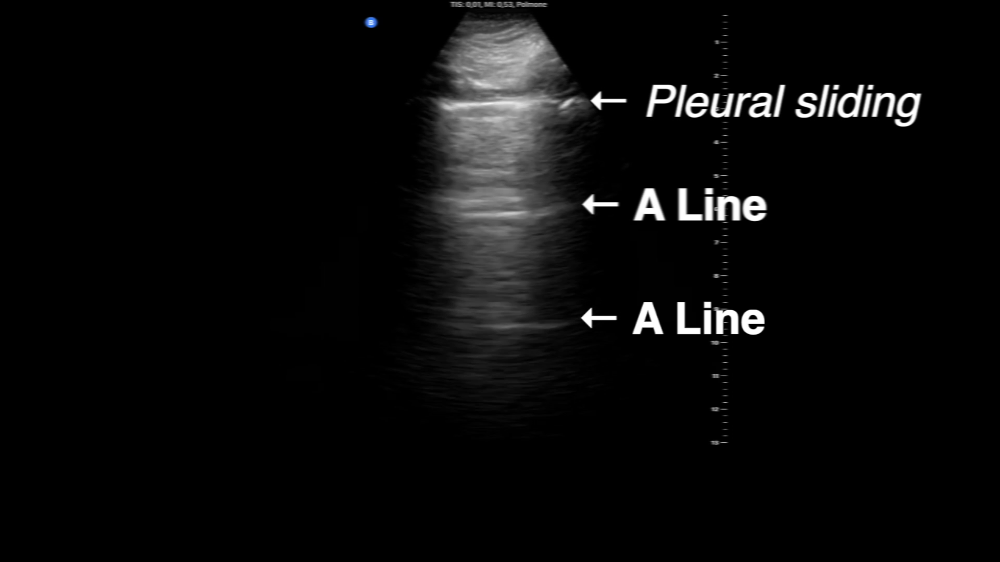

Cranial enclosure and pleural sliding
A midline MRI shows cranial and upper cervical context. A separate ultrasound records motion at the pleural acoustic interface. These are independent cases and modalities, with separate spatial and time references.
From the cranial region toward the upper cervical canal
Anterior: image-left · Posterior: image-right · Superior: up. Original 5 cm ruler retained at the right edge.

Reading key: the brain lies within the cranial enclosure; the brainstem continues toward the upper cervical cord and canal. The MRI field ends in the upper neck. The remainder of the vertebral canal is outside this view.
The owning catalogue describes this as a normal midline T1-weighted MRI. Brain tissue and its enclosing cavity are different structures. No new cavity outline, meningeal segmentation or cerebrospinal-fluid boundary has been drawn. Scan contrast is not natural tissue color.
Wellcome Collection, Normal brain. 6. Sagittal MRI scan, N0023480 · CC BY 4.0. Complete native 1443 × 1448 JPEG unchanged. Age, sex, scanner, voxel size, slice thickness and acquisition date are unreported; “normal” is the catalogue description.
Observed pleural-interface motion
The clock shows elapsed time in the delivered source file. Publisher playback speed and original biological acquisition timing are distinct: the original capture rate is not verified. The movie starts paused and does not loop.
Source-labelled still · file time 4.09 s

Reading key: the source labels the superficial bright pleural interface and the deeper A-lines. A-lines are reverberation artifacts, not additional membrane layers. The transducer is also slightly tilted and rocked; changes on screen therefore include probe motion.
- The scan shows a superficial bright pleural-interface line and deeper repeated echoes.
- During the clip the source adds arrows identifying “Pleural sliding” and “A Line”. These labels are part of the original video.
- The interface and echo patterns shift as observation continues, including the source-described probe rocking. The film returns to an unlabelled view before it ends.
This is a normal-aeration reference pattern within a clinical review of COVID-19 imaging. The subject’s overall health and disease status are unreported. Separate parietal and visceral leaflets, their microscopic thickness and the normal lubricating fluid film are not resolved. The bright line must not be outlined as a measured fluid gap. Original depth ticks are preserved; their units are not explicitly shown in these frames.
Vetrugno et al. (2020), The Ultrasound Journal 12:39, Additional file 1, Clip S1 · CC BY 4.0. Publisher video bytes unchanged; the M4V file is served with an MP4 extension. Native canvas 1920 × 1080; delivered duration 8.216542 s. Poster: full decoded frame 98 (zero-based), without resizing, recoloring or new labels. Exact subject, chest side/interspace, probe model and original acquisition rate are unreported.